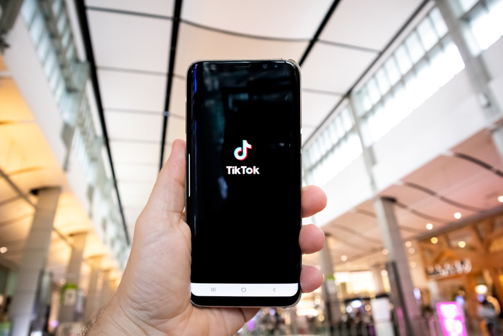

Així arrossega TikTok les marques que volen vendre als joves
Amb més de 16 milions d'usuaris a Espanya, més de 150 milions a Europa i més de 1.000 milions a tot el món, TikTok és una xarxa social en plena efervescència, especialment entre el públic de menys edat. Al voltant del 40% dels seus usuaris tenen entre 18 i 24 anys i un 32% entre 25 i 34. Nascuda el 2016, la xarxa de creació xinesa va començar a introduir la publicitat el 2019, i ara com ara és al punt de mira de totes aquelles marques que volen connectar amb les persones més joves. També, i coincidint amb les eleccions municipals i autonòmiques, ha estat camp de batalla per a les formacions polítiques, que a TikTok tenen vetada la propaganda, però que igualment tenen facilitat per publicar-hi vídeos senzills on els candidats miren de connectar amb el jovent. Quins beneficis pot suposar anunciar-se a TikTok i a què cal estar atents? En parlen tres professores dels Estudis de Ciències de la Informació i de la Comunicació de la Universitat Oberta de Catalunya. Parlem amb Mireia Montaña, directora del màster en Estratègia i Creativitat en la Publicitat, Candela Ollé, directora del màster de Periodisme i Comunicació Digital: Dades i Noves Narratives i amb Sílvia Martínez, directora del màster de Social Media: Gestió i Estratègia.
Què atrau de TikTok?
Allò que es fa en publicitat sempre ha estat un reflex de la societat
, comença Mireia
Montaña. I la comunicació dels joves és cada cop més dinàmica i amb menys
capacitat d'atenció. A les xarxes socials fan scroll molt ràpid i això és el que estan
acostumats a consumir amb els seus iguals
, continua.
En aquest sentit, l'experta de la UOC recorda que ja fa anys que Youtube va introduir
els anuncis de sis segons i que actualment els vídeos curts de TikTok són a l'ordre del
dia. Si les marques es volen rejovenir, què fan? S'adapten a aquests formats per
intentar agradar més als joves. Moltes marques lluiten per endur-se l'anomenat pocket
money, és a dir, els diners de la setmanada
, subratlla.
TikTok aprofita per arribar a unes franges d'edat que no consumeixen
els mitjans tradicionals, que s'informen bàsicament per les xarxes socials
, afegeix la professora
Candela Ollé.
De fet, segons l'informe Global Social Media Trends Report 2023 , elaborat per Hubspot i Brandwhatch, l'any passat TikTok va superar Google com a font principal d'informació per a l'anomenada generació Z o dels centennials. L'estudi indica que un 36% dels consumidors de la generació Z i un 24% dels consumidors d'entre 18 i 54 anys busquen primer les marques a les xarxes.
Malgrat que, segons el mateix informe, Instagram és la xarxa social preferida per als
experts en màrqueting en les seves apostes de cara al 2023, TikTok li va al darrere
pel potencial que consideren que té per fer créixer l'audiència. A TikTok pots fer
publicitat en formats força econòmics i que arriben a molta gent
, ratifica Montaña.
Tant les diferents possibilitats de pressupost, com de format, són aspectes positius
de TikTok a l'hora d'atraure les marques per a fer-hi publicitat
, coincideix Sílvia
Martínez. Es poden fer campanyes per crear reptes i que els usuaris facin contingut
vinculat a un hashtag d'una marca concreta, i això és molt interessant per a les
empreses
, il·lustra en aquest sentit. Així mateix, ressalta la manera com els usuaris es
relacionen amb la plataforma: Està pensada per a l'entreteniment i quan
obres TikTok ja estàs sentint que passaràs una estona agradable, cosa que et
predisposa en la manera com rebràs el missatge
.
De fet, en la campanya electoral per a les municipals i autonòmiques, molts partits polítics de l'estat espanyol han aprofitat les possibilitats que ofereix TikTok malgrat que hi tinguin vetada la publicitat. Un exemple és la cançó creada pel PP madrileny sota el títol de Ganas de Madrid, que ha dut molts usuaris a fer-ne vídeos. També se n'han fet paròdies a la mateixa xarxa.
Què pot tirar enrere les marques?
Doncs, depèn de la marca, li pot anar molt bé fer anuncis a TikTok o pot quedar molt
estrany, quasi ridícul
, assegura Montaña.
La professora de la UOC, que és experta en publicitat, subratlla que els joves són el
públic més infidel que hi ha. Pot ser que puntualment vagin molt a un determinat
producte i que després canviïn de cop
. És per això que recomana invertir amb mesura
en la publicitat cap a aquesta franja d'edat a les xarxes: Tenen poc vincle emocional
amb les marques
, assegura. Les campanyes de publicitat de les marques no poden
basar-se només en plataformes que de cop i volta són molt conegudes, també cal que
facin altres accions per als joves en altres espais, com el branded content, continguts
creats des de la marca
, detalla.
En aquest sentit, Martínez, experta en el consum i l'ús dels usuaris de les xarxes
socials, recomana als publicistes estar molt pendents a cada moment de per on es
mouen els joves i com canvien els seus gustos i preferències, i no tenir por
d'experimentar i innovar
.
Per la seva banda, Ollé fa dues advertències. La primera:
Tot el que passa per TikTok no està verificat ni validat. S'ha d'anar amb compte amb la validesa que dones a allò que consumeixes en l'àmbit periodístic i publicitari.
I la segona:
A diferència de la majoria d'aplicacions que consumim massivament, en aquest cas el país que hi ha darrere la companyia que controla la xarxa i que té les dades és la Xina. Això ja ha condicionat que diversos països i les institucions europees en prohibeixin l'ús i pot condicionar que la moda de TikTok sigui més efímera.